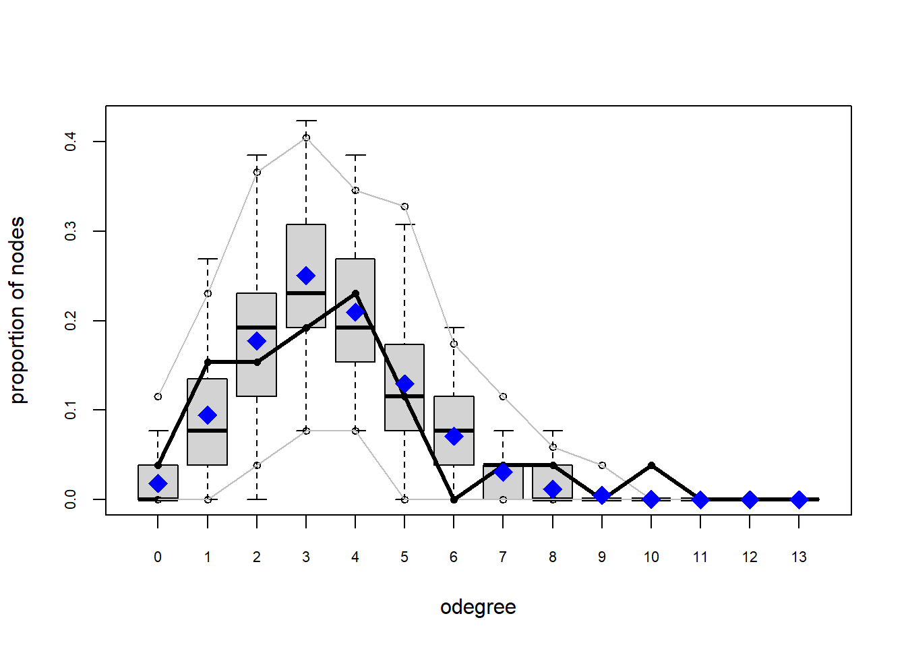
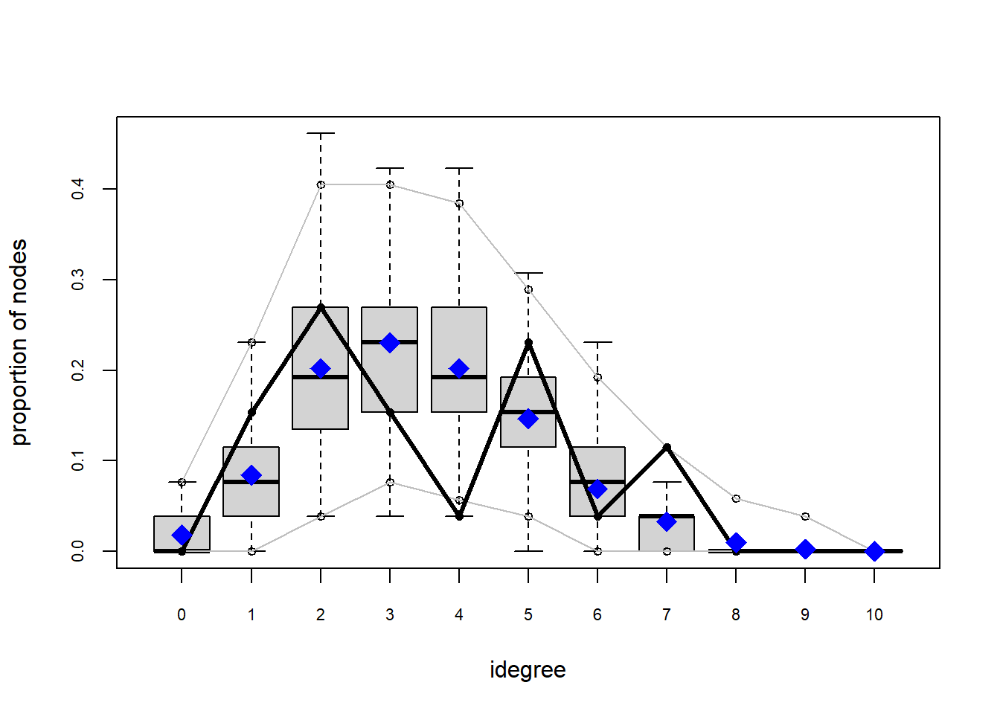
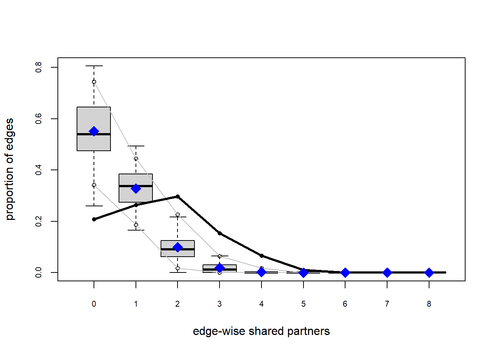

5 Exponential Random Graphs Modeling
5.1 Data preparation
We’ll work with the same single class (“12b”) from the Knecht data as before. To keep things very concise here, we simply load an igraph network object that we’ve saved to disk before.
## IGRAPH 963ef71 DN-- 26 91 --
## + attr: name (v/c), sex (v/n), age (v/n), sourcevar (e/c)However, for exponential random graph modeling, we’ll actually need network objects from the network class (that is, as generated by the network package). For this, we’ll use the intergraph package, already loaded above. Unfortunately, network does not handle factor variables, so we first need to convert ‘sex’ to a numeric variable.
## Network attributes:
## vertices = 26
## directed = TRUE
## hyper = FALSE
## loops = FALSE
## multiple = FALSE
## bipartite = FALSE
## total edges= 91
## missing edges= 0
## non-missing edges= 91
##
## Vertex attribute names:
## age sex vertex.names
##
## Edge attribute names:
## sourcevarThe alternative approach would be to load the original data set, filter out the class, prepare the data as an edge list and node list as we’ve done before, and then import it directly into a network object using one of the as.network...() function from the network package.
Looks like we have some gender homophily going on here, as well as a lot of reciprocity! With ERGM, we can test this statistically.
5.2 Model estimation
Now let’s estimate a simple model. First we test the hypothesis that ties are likely to be reciprocated. In this case we add, besides the “edges” term,
## Starting maximum pseudolikelihood estimation (MPLE):## Obtaining the responsible dyads.## Evaluating the predictor and response matrix.## Maximizing the pseudolikelihood.## Finished MPLE.## Starting Monte Carlo maximum likelihood estimation (MCMLE):## Iteration 1 of at most 60:## Warning: 'glpk' selected as the solver, but package 'Rglpk' is not available;
## falling back to 'lpSolveAPI'. This should be fine unless the sample size and/or
## the number of parameters is very big.## Optimizing with step length 1.0000.## The log-likelihood improved by 0.0067.## Convergence test p-value: 0.0016. Converged with 99% confidence.
## Finished MCMLE.
## Evaluating log-likelihood at the estimate. Fitting the dyad-independent submodel...
## Bridging between the dyad-independent submodel and the full model...
## Setting up bridge sampling...
## Using 16 bridges: 1 2 3 4 5 6 7 8 9 10 11 12 13 14 15 16 .
## Bridging finished.
##
## This model was fit using MCMC. To examine model diagnostics and check
## for degeneracy, use the mcmc.diagnostics() function.## Call:
## ergm(formula = g ~ edges + mutual)
##
## Monte Carlo Maximum Likelihood Results:
##
## Estimate Std. Error MCMC % z value Pr(>|z|)
## edges -2.7151 0.1809 0 -15.006 <1e-04 ***
## mutual 3.1701 0.3921 0 8.086 <1e-04 ***
## ---
## Signif. codes: 0 '***' 0.001 '**' 0.01 '*' 0.05 '.' 0.1 ' ' 1
##
## Null Deviance: 901.1 on 650 degrees of freedom
## Residual Deviance: 452.8 on 648 degrees of freedom
##
## AIC: 456.8 BIC: 465.8 (Smaller is better. MC Std. Err. = 0.768)Indeed, we find a positive and significant effect for the number of reciprocated ties.
Now let’s add the homophily effect (as well as a gender differential effect):
## Call:
## ergm(formula = g ~ edges + mutual + nodefactor("sex", levels = 2) +
## nodematch("sex"))
##
## Monte Carlo Maximum Likelihood Results:
##
## Estimate Std. Error MCMC % z value Pr(>|z|)
## edges -3.7494 0.3004 0 -12.480 <1e-04 ***
## mutual 2.8477 0.3955 0 7.201 <1e-04 ***
## nodefactor.sex.2 0.1827 0.1186 0 1.541 0.123
## nodematch.sex 1.4891 0.2893 0 5.148 <1e-04 ***
## ---
## Signif. codes: 0 '***' 0.001 '**' 0.01 '*' 0.05 '.' 0.1 ' ' 1
##
## Null Deviance: 901.1 on 650 degrees of freedom
## Residual Deviance: 416.3 on 646 degrees of freedom
##
## AIC: 424.3 BIC: 442.3 (Smaller is better. MC Std. Err. = 0.5724)Indeed, we find a positive effect of gender homophily.
5.3 Goodness of fit
Finally, let’s look at goodness of fit:
##
## Goodness-of-fit for in-degree
##
## obs min mean max MC p-value
## idegree0 0 0 0.40 3 1.00
## idegree1 4 0 1.82 5 0.22
## idegree2 7 1 4.48 10 0.24
## idegree3 4 2 6.67 11 0.18
## idegree4 1 2 5.50 11 0.00
## idegree5 6 0 3.85 12 0.36
## idegree6 1 0 2.11 5 0.72
## idegree7 3 0 0.79 4 0.14
## idegree8 0 0 0.31 3 1.00
## idegree9 0 0 0.06 2 1.00
## idegree10 0 0 0.01 1 1.00
##
## Goodness-of-fit for out-degree
##
## obs min mean max MC p-value
## odegree0 1 0 0.43 3 0.68
## odegree1 4 0 2.05 6 0.32
## odegree2 4 0 4.50 9 1.00
## odegree3 5 2 5.95 10 0.88
## odegree4 6 1 6.02 11 1.00
## odegree5 3 0 3.76 8 0.94
## odegree6 0 0 2.01 6 0.20
## odegree7 1 0 0.86 5 1.00
## odegree8 1 0 0.31 2 0.56
## odegree9 0 0 0.09 2 1.00
## odegree10 1 0 0.02 1 0.04
##
## Goodness-of-fit for edgewise shared partner
##
## obs min mean max MC p-value
## esp.OTP0 19 27 49.32 65 0.00
## esp.OTP1 24 15 31.71 49 0.32
## esp.OTP2 27 0 10.07 29 0.08
## esp.OTP3 14 0 1.97 12 0.00
## esp.OTP4 6 0 0.27 6 0.02
## esp.OTP5 1 0 0.01 1 0.02
##
## Goodness-of-fit for minimum geodesic distance
##
## obs min mean max MC p-value
## 1 91 75 93.35 119 0.86
## 2 104 137 199.04 285 0.00
## 3 80 155 198.97 247 0.00
## 4 57 41 99.50 136 0.06
## 5 48 1 29.54 78 0.38
## 6 18 0 6.53 43 0.24
## 7 5 0 1.29 24 0.22
## 8 0 0 0.23 11 1.00
## 9 0 0 0.02 2 1.00
## Inf 247 0 21.53 97 0.00
##
## Goodness-of-fit for model statistics
##
## obs min mean max MC p-value
## edges 91 75 93.35 119 0.86
## mutual 28 19 29.18 39 0.98
## nodefactor.sex.2 58 35 57.92 83 1.00
## nodematch.sex 79 63 81.67 108 0.88This looks OK for the model statistics, but less so for the for network statistics not in the model. Let’s have a closer look at those:

Indeed, some of these are quite off, indicating that we might want to include some other effects in the model. Indeed, for directed networks, it is common to include at least somethign related to degree, reciprocity, and something related to triadic closure. The exact choice of effects is not trivial though and may lead to compuational complications, so we leave it at this for now.
5.4 Further resources on ERGMs
For further introductions to ERGM, we suggest this tutorial by the Statnet team and this tutorial by Rawlings et al. The latter in particular has an informative illustration of the inclusion of triadic effects and the computational issues involved. Also helpful is this short list of common ERGM terms. A longer list is here.